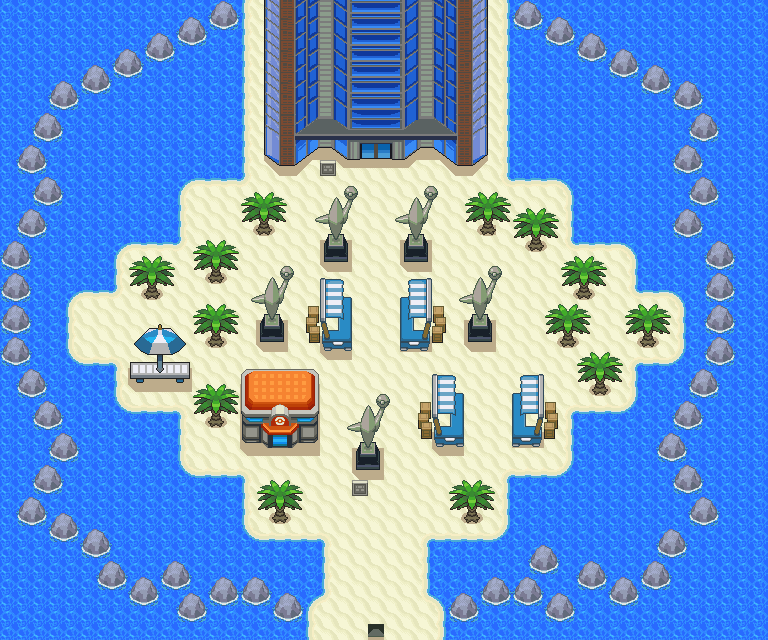
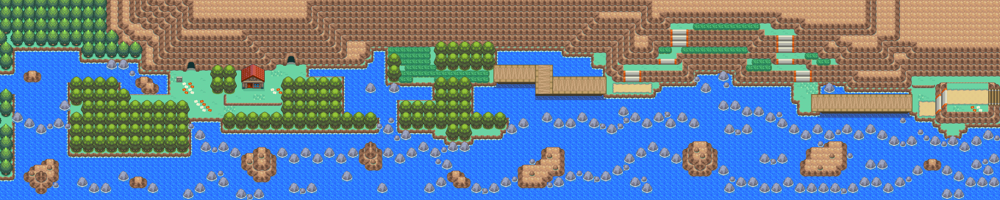
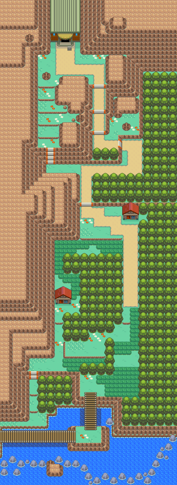
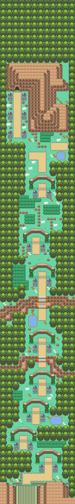
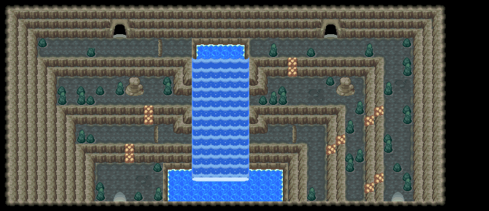
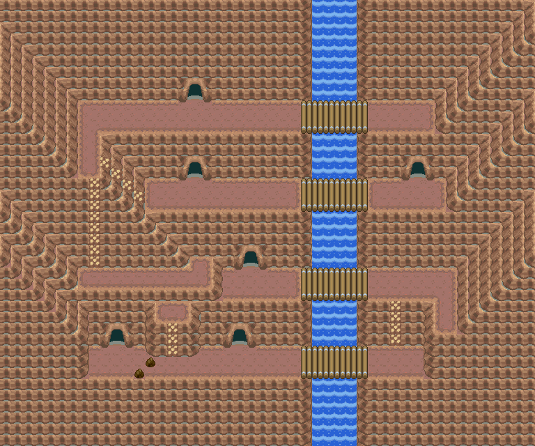

经验糖果M
充满能量的糖果。
获取：对战开拓区(26,20) ／ 27号道路(141,10) ／ 26号道路(20,82) ／ 23号公路(4,84) ／ 冠军之路(37,17) ／ 冠军之路(38,9)
用途
充满能量的糖果。 交给1只宝可梦后， 可以为它增加经验值。
标价 0 口袋：道具
获取方式
人物剧情
- 对战开拓区（区域219） · (26,20) · 与坐标处人物交互 · 数量 1 · 地图｜静态图 · 触发条件待补
- 27号道路（区域202） · (141,10) · 与坐标处人物交互 · 数量 1 · 地图｜静态图 · 触发条件待补
- 26号道路（区域203） · (20,82) · 与坐标处人物交互 · 数量 1 · 地图｜静态图 · 触发条件待补
- 23号公路（区域123） · (4,84) · 与坐标处人物交互 · 数量 1 · 地图｜静态图 · 触发条件待补
- 冠军之路（区域132） · (37,17) · 与坐标处人物交互 · 数量 1 · 地图｜静态图 · 触发条件待补
- 冠军之路（区域132） · (38,9) · 与坐标处人物交互 · 数量 1 · 地图｜静态图 · 触发条件待补


数据来源
- 来源文档：out/items.json（
/538） - 表索引 index 0538；内嵌 itemId 538；口袋 ITEMS (id=1)；type 1；hold_effect 0/3；importance 0；unk19 0
- 获取来源文档：maps_research/out/scripts/scripts.json
- 获取记录 ID：
script_item_candidate:09CE1314:54:12、script_item_candidate:std:087BE138:3:81、script_item_candidate:std:087BE16C:3:106、script_item_candidate:std:087BEC25:3:42、script_item_candidate:std:087BEC73:1:40、script_item_candidate:std:087BECDB:53:10 - 说明文字解码来源：
reference/SAVE_HOME_GAME_DATA.json.charmap
地点地图
共享RGB底图；点击可缩放定位。数字对应本页相关地点，不代表地图上全部事件。
对战开拓区

1 经验糖果M（26,20）
27号道路

1 经验糖果M（141,10）
26号道路

1 经验糖果M（20,82）
23号公路

1 经验糖果M（4,84）
冠军之路

1 经验糖果M（37,17）
冠军之路

1 经验糖果M（38,9）